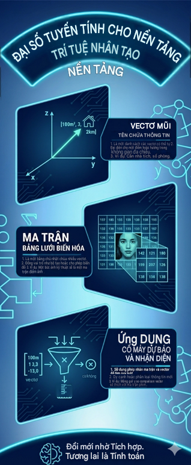

Sử dụng AI tạo sinh để hỗ trợ sáng tạo nội dung
Dự án Thiết kế Infographic: "Bản chất của Đại số tuyến tính trong AI: Hiểu ngôn ngữ của máy tính chỉ trong 3 phút" nhằm đơn giản hóa toán học phức tạp cho người mới bắt đầu.
TỔ HỢP CÔNG CỤ SÁNG TẠO
Kết hợp sức mạnh đa phương thức để tối ưu hóa quy trình thiết kế
Google Gemini (Biên tập)
Đóng vai trò "Chuyên gia AI". Sử dụng Prompt Persona để chuyển hóa các khái niệm trừu tượng (Vector, Ma trận, Tensor) thành ngôn ngữ đời thường, gắn liền với ví dụ thực tiễn (giá nhà, điểm ảnh) thay vì giữ nguyên định nghĩa hàn lâm khô khan.
DALL-E 3 (Thị giác)
Đóng vai trò "Họa sĩ minh họa". Xử lý các Prompt chỉ định rõ phong cách thiết kế (minimalist, flat design, isometric view, blue and purple neon colors) để tạo ra bộ hình ảnh nền mang đậm chất công nghệ hiện đại, không bị nhiễu text.
Canva AI (Dàn trang)
Đóng vai trò "Trợ lý Layout". Rút ngắn thời gian tìm kiếm template bằng cách sinh tự động các bố cục (layout) phân khối dọc phù hợp với chủ đề công nghệ. Phần lớn thời gian sau đó được dành cho việc tinh chỉnh Typography và White-space.
✨ THÀNH PHẨM INFOGRAPHIC HOÀN THIỆN
📄 Xem Báo Cáo Phân Tích PromptDấu Ấn Con Người (Human-in-the-loop)
AI cung cấp nguyên liệu thô tuyệt vời, nhưng để trở thành một sản phẩm học thuật chuẩn xác, sự can thiệp của người tạo (Creator) là bắt buộc. Trong dự án này, tôi đóng vai trò là "Bộ lọc cuối cùng":
- Cá nhân hóa Giọng văn: Tự tay viết lại các tiêu đề (Hook) thu hút hơn. Lược bỏ các từ nối rườm rà do Gemini sinh ra để tối ưu hóa không gian đọc.
- Kiểm duyệt Toán học: AI sinh ảnh thường làm lỗi định dạng các biểu thức hoặc vector hình học. Tôi phải sử dụng công cụ thiết kế của Canva để đè lên, vẽ lại các trục tọa độ $(x, y, z)$ và điểm ảnh ma trận cho chính xác tuyệt đối.
- Thẩm mỹ UI/UX: Tự tinh chỉnh lại font chữ (chuyển sang Sans-serif hiện đại), căn lề và xử lý phân cấp thông tin thị giác để mắt người đọc đi mượt mà từ khái niệm Vector -> Ma trận -> Ứng dụng.

⚖️ CAM KẾT ĐẠO ĐỨC TRONG SÁNG TẠO SỐ
Quá trình sử dụng AI tạo sinh luôn đi kèm với các rủi ro. Dưới đây là bộ nguyên tắc tôi đã áp dụng để đảm bảo tính liêm chính cho sản phẩm của mình: